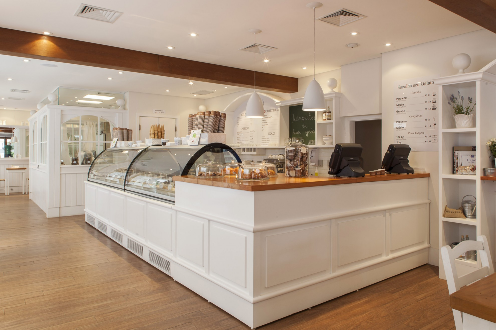

Nosotros
Con más de 40 años de trayectoria elaborando diariamente un producto netamente artesanal. La naturaleza de nuestro helado representa la tradición de recetas ancestrales, siempre en base a materias primas de alta calidad. Sumada a la calidez de nuestros locales, perfectamente ambientados, contamos con una amplia variedad en Pasticceria, elaborada también de forma artesanal. Por supuesto, el café no puede faltar, complemento ideal para todas nuestras delicias artesanales.
A lo largo de todos estos años pasamos momentos buenos, muy buenos y de los otros, pero siempre manteniendo clara nuestra visión por sobre todas las cosas, logrando un equilibrio que hoy nos permite ser lo que somos y creer en un futuro netamente de crecimiento.